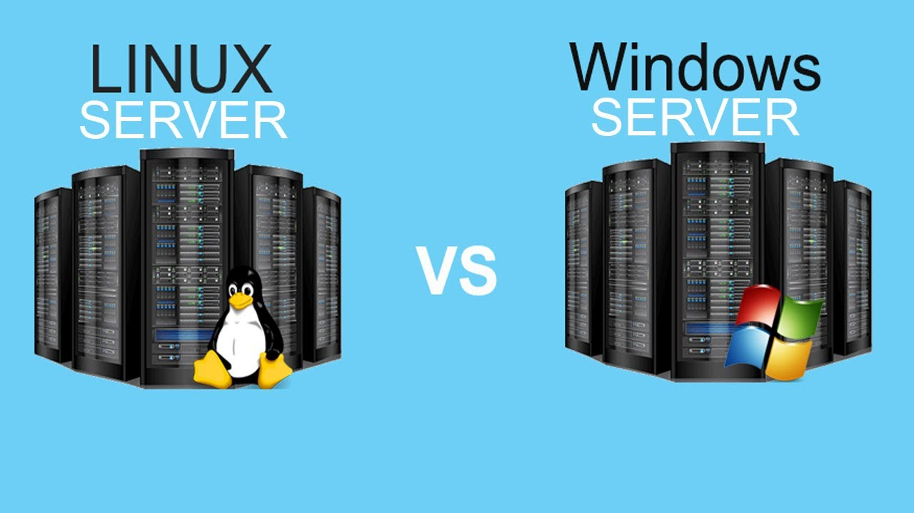
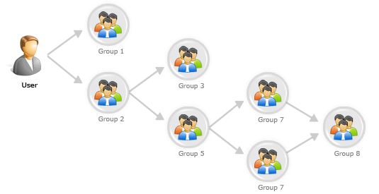
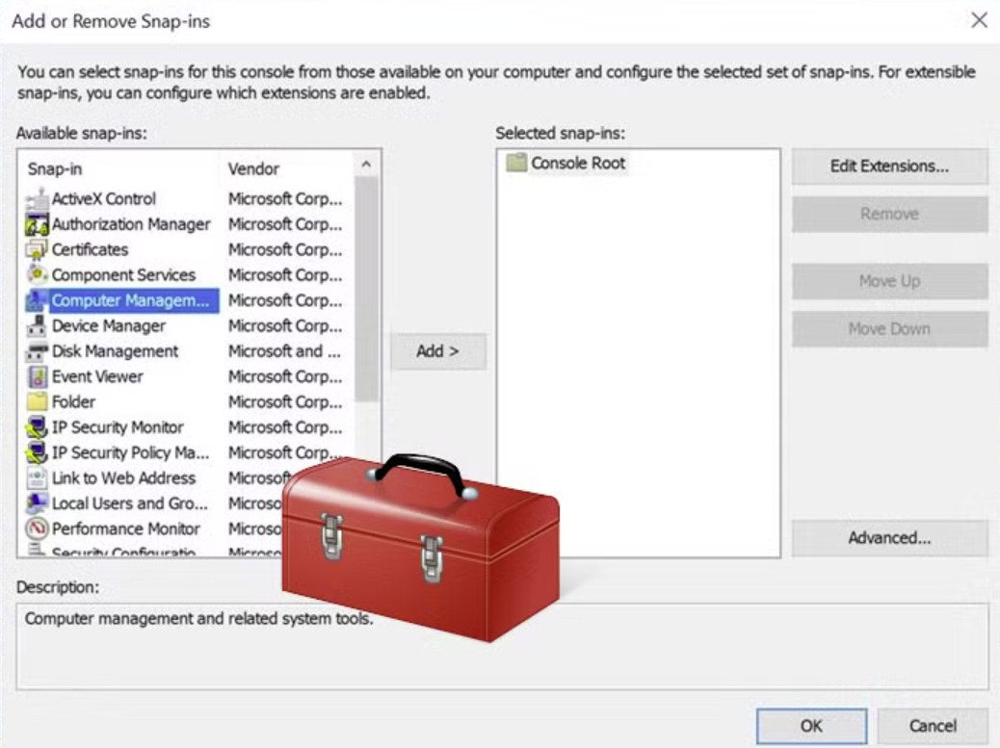
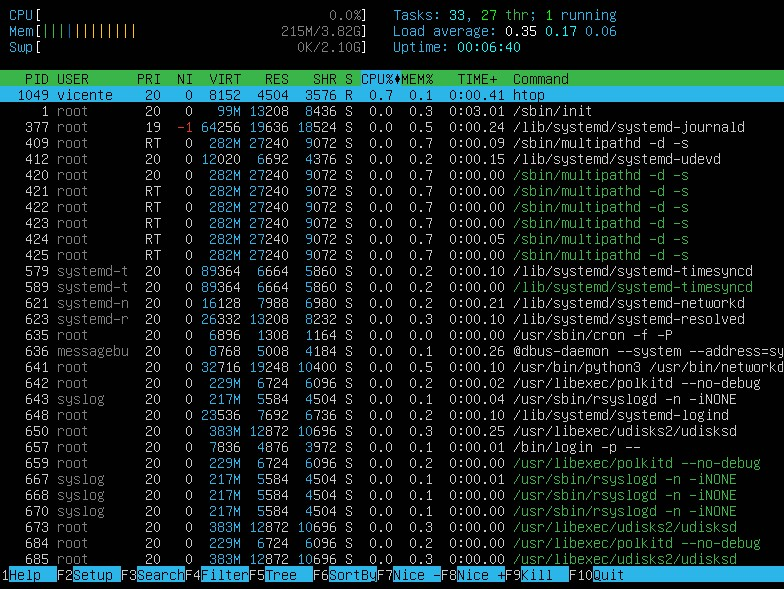

Índice
- 1. Cuentas de usuario y de equipo
- 1.1. Creación y gestión de cuentas
- 1.2. Perfiles de usuario
- 1.3. Perfiles móviles
- 2. Grupos y pertenencia
- 2.1. Tipos y ámbitos de grupos
- 2.2. Asignación de usuarios a grupos
- 2.3. Usuarios y grupos especiales
- 3. Herramientas de administración
- 3.1. Consolas GUI y CLI
- 3.2. Scripts y automatización
- Actividades y rúbrica
1. Cuentas de usuario y de equipo
El acceso a un sistema operativo en red se apoya en identidades bien gestionadas. Cada persona o dispositivo dispone de una cuenta para asignar permisos, controlar accesos y registrar actividad. La creación y el mantenimiento correcto de estas cuentas es responsabilidad clave del administrador.
Tipos de cuentas:
- Locales: existen solo en un equipo.
- De dominio: centralizadas (AD, LDAP) y válidas en toda la red. En Windows Server, se gestionan desde Active Directory. En GNU/Linux, se usan servicios como LDAP o SSSD.
- Cuentas de equipo: representan a cada máquina unida al dominio.
1.1 Creación y gestión de cuentas
La creación de cuentas de usuario y equipo se realiza mediante herramientas específicas del sistema operativo.
-
En GNU/Linux, se usan comandos CLI como
useraddoadduser - En Windows Server se usa la consola de Active Directory o las cuentas locales (no confundir entre ellas).

1.1.1 Cuentas en GNU/Linux
En GNU/Linux, las cuentas de usuario se gestionan mediante comandos CLI o herramientas gráficas.
- Crear cuenta de usuario:
sudo adduser juanContestar al formulario
- Crear un grupo:
sudo groupadd docentes - Añadir a un grupo existente:
sudo usermod -aG docentes juan - Eliminar cuenta:
sudo deluser juan
1.1.2 Cuentas en Windows Server
En Windows Server, las cuentas de usuario y equipo se gestionan principalmente a través de Active Directory Users and Computers (ADUC).
En este tema no utilizarems AD, puesto que se necesita promover el dominio. Se verá en el siguiente tema.
- Crear cuenta de usuario: ADUC → Usuarios → Nuevo → Usuario.
- Crear cuenta de equipo: ADUC → Equipos → Nuevo → Equipo.
- Configurar propiedades: establecer contraseña, grupo, perfil, etc.
- Eliminar cuenta: ADUC → Usuario/Equipo → Eliminar.
1.1.3 Creación de cuentas locales / Windows
En Windows, las cuentas locales se gestionan desde el Panel de Control o mediante la consola de Administración de equipos.
- Panel de Control: Cuentas de usuario → Administrar otra cuenta → Agregar nuevo usuario.
- Administración de equipos: Usuarios y grupos locales → Usuarios → Nuevo usuario.
- Configurar propiedades: establecer contraseña, grupo, etc.
- Eliminar cuenta: Panel de Control o Administración de equipos → Usuario → Eliminar.
1.2. Tipos de perfiles de usuario
El perfil de usuario define el entorno de trabajo, incluyendo configuraciones, archivos y preferencias. Existen varios tipos:
- Local: almacenado en el equipo cliente, no se sincroniza.
- Móvil: almacenado en servidor, sincronizado al iniciar/cerrar sesión.
- Obligatorio: no modificable por el usuario, ideal para entornos controlados.
- Temporal: se descarta si no puede cargarse el perfil, útil para sesiones puntuales.
1.3. Perfil móvil / Windows Server
El perfil móvil permite a los usuarios mantener su entorno de trabajo consistente en cualquier equipo del dominio. Se almacena en un recurso compartido del servidor y se sincroniza al iniciar/cerrar sesión.
- Configuración: ADUC → Usuario → Propiedades → Perfil → Ruta del perfil.
- Almacenamiento: recurso compartido con permisos adecuados (ej.
\\servidor\perfiles). - Consideraciones: tamaño del perfil, tiempos de carga y sincronización de datos.

2. Grupos
Los grupos son conjuntos de usuarios que comparten permisos y configuraciones. Facilitan la gestión de accesos y recursos al asignar permisos a un grupo en lugar de a cada usuario individualmente.

2.1. Asignación de usuarios a grupos / Linux
En GNU/Linux, los usuarios se asignan a grupos para gestionar permisos de manera eficiente. Cada usuario puede pertenecer a varios grupos, y cada grupo puede tener múltiples usuarios.
- Comando
usermod: para añadir un usuario a un grupo:sudo usermod -aG grupo usuario - Archivo
/etc/group: contiene la información de grupos y sus miembros. - Ejemplo: para añadir el usuario “juan” al grupo “docentes”:
sudo usermod -aG docentes juan - Ver grupos de un usuario:
# Ver grupos de un usuario groups juan # Ver información detallada id juan
-a para evitar eliminar al usuario de otros
grupos.2.2. Usuarios y grupos especiales (Windows/Linux)
Los sistemas operativos incorporan cuentas y grupos especiales que cumplen funciones clave en la administración o en la operación del sistema:
- Cuentas especiales comunes: Administradores, invitados y de sistema
- Grupos predeterminados Windows: Administradores, Usuarios, Usuarios autenticados, etc.
- Grupos predeterminados Linux: root, wheel, adm, etc.
3. Herramientas de administración
La gestión de usuarios y grupos se apoya en diversas herramientas, tanto gráficas (GUI) como de línea de comandos (CLI). La elección depende del entorno, la tarea y las preferencias del administrador.
Windows
- ADUC (dsa.msc), Editor de GPO (gpmc.msc/gpedit.msc).
- MMC personalizada con complementos: Servicios, Visor de eventos, Monitor de rendimiento, etc.
- CLI:
net,ds*, y PowerShell (Get-ADUser,New-ADUser...).
GNU/Linux
- CLI:
adduser,usermod,groupadd,getent, etc. - Herramientas gráficas en entornos de escritorio (Gnome/KDE).
- Entornos centralizados: LDAP, Samba/AD, FreeIPA.
- htop: herramienta interactiva para visualizar procesos en tiempo real.
3.1 MMC (Microsoft Management Console)
La MMC es una plataforma de administración modular que permite crear consolas personalizadas con diversos complementos para gestionar diferentes aspectos del sistema.
Son útiles para centralizar tareas administrativas y evitar tener que abrir múltiples herramientas.

Creación de la consola:
- Ejecutar
mmc. - Ir a Archivo > Agregar/quitar complemento.
- Añadir los complementos necesarios (por ejemplo, Usuarios y equipos de Active Directory).
- Guardar la consola con un nombre descriptivo.
3.2. HTOP
htop es una herramienta interactiva para visualizar procesos en tiempo real en sistemas GNU/Linux.

Funcionalidades:
- Ejecutar
htop: En la terminal, simplemente escribirhtop. - Visualizar procesos en tiempo real con colores y barras de uso de CPU y memoria.
- Ordenar procesos por CPU, memoria o tiempo de ejecución.
- Terminar procesos seleccionados con una pulsación de tecla.
- Para "matar" un proceso, seleccionarlo y pulsar la tecla "K" o "F9".
3.2. Scripts y automatización
La automatización de tareas administrativas mediante scripts es fundamental para mejorar la eficiencia y reducir errores. Tanto en Windows como en GNU/Linux, existen potentes herramientas para crear y ejecutar scripts.
En Windows PowerShell
# Crear usuarios desde CSV
Import-Csv usuarios.csv | ForEach-Object {
New-ADUser -Name $_.Nombre -SamAccountName $_.Usuario \
-AccountPassword (ConvertTo-SecureString $_.Contraseña
-AsPlainText -Force) \
-Enabled $true
}En Linux Bash
# Crear múltiples usuarios desde un script
for u in alumno{01..10}; do
sudo useradd -m "$u" && echo "$u:PwdTemporal#2026" | sudo chpasswd
done